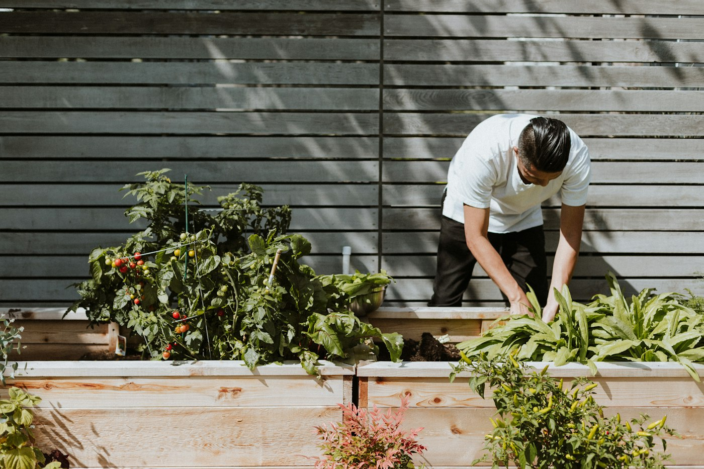

Diagnóstico por foto con IA
Cámara o galería → la app descarta fotos borrosas, valida que sea una planta y la IA de visión devuelve síntomas, confianza en palabras, receta casera y opción química con precauciones. Cada diagnóstico abre un caso con línea de tiempo.